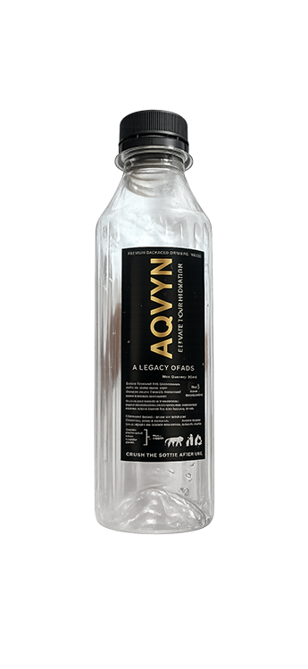

pure aqvyn
still · sparkling · glass
Water worth slowing down for
aqvyn is alpine spring water, lightly mineralized for a clean, crisp taste. Filtered by rock and time—nothing added but bottle and cap.
Find aqvynWhat’s inside
Smooth on the palate—no sour edge, no harsh bite.
Just enough electrolytes from the source—not engineered.
From deep aquifers—part of that soft, rounded mouthfeel.
Unsweetened. Unflavored. Water that tastes like water.
Bottle-to-bottle programs where we can—less plastic drift.
Our story

The first capture
We tapped a single high-altitude spring—cold, constant, and clear. The first aqvyn bottles were filled by hand on the valley floor, labels still damp from the press.
Watershed promise
We locked in long-term protection for the catchment—no shortcuts, no bulk extraction. Every sip funds monitoring, habitat repair, and keeping the source as quiet as the day we found it.